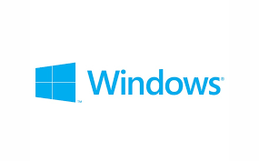
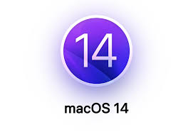

OS and Softwares
Windows
Windows operating system (OS) has been a staple in the computing world for decades, known for its user-friendly interface and broad compatibility with software and hardware. One of the key advantages of Windows is its widespread adoption across various devices, from desktop computers to laptops, tablets, and even gaming consoles. Its intuitive graphical user interface (GUI) makes it accessible to users of all levels, allowing for easy navigation and customization. Moreover, Windows boasts an extensive library of applications and games, with support from a vast ecosystem of developers and publishers. This breadth of software availability ensures that users have access to a wide range of tools and entertainment options to suit their needs and preferences. Additionally, Windows regularly receives updates and security patches from Microsoft, enhancing performance, stability, and protection against evolving threats. Overall, the Windows OS continues to be a popular choice for users worldwide, offering a versatile and reliable platform for productivity, creativity, and entertainment.
MacOS
 Mac OS, developed by Apple, is known for its elegant design, smooth integration with Apple hardware, and emphasis on user experience. Its interface is user-friendly, with intuitive navigation and visually appealing design elements. Mac OS creates a unified ecosystem across Apple devices, facilitating effortless data and application synchronization through iCloud. This seamless integration enhances productivity and convenience for users across various Apple products. Additionally, Mac OS is praised for its stability, reliability, and security, thanks to Apple's stringent quality control measures and regular updates. The operating system includes a suite of productivity and creativity tools like Pages, Numbers, Keynote, and iMovie, providing users with powerful applications for diverse tasks straight out of the box. Overall, Mac OS offers a refined computing experience appreciated by creative professionals, students, and general consumers for its elegant design, seamless integration, and robust security features.
Linux
 Linux, an open-source operating system, stands out for its flexibility, stability, and community-driven development model. Offering a wide range of distributions, or "distros," Linux caters to diverse user preferences and computing needs. One of its key strengths lies in its open nature, allowing users to modify and customize the system to their liking without restrictions. This fosters innovation and empowers users to tailor their Linux experience to suit their specific requirements, whether for personal use, enterprise environments, or specialized applications like servers and embedded systems. Moreover, Linux is renowned for its stability and security, with a robust architecture and a proactive community constantly monitoring and patching vulnerabilities. This makes Linux a preferred choice for users seeking a reliable and secure operating system. Additionally, Linux boasts a vast repository of free and open-source software, providing users with access to a wide range of applications for productivity, creativity, and entertainment. Overall, Linux embodies the principles of openness, collaboration, and freedom, offering users a powerful and customizable platform that continues to thrive through community-driven development and innovation.
Linux, an open-source operating system, stands out for its flexibility, stability, and community-driven development model. Offering a wide range of distributions, or "distros," Linux caters to diverse user preferences and computing needs. One of its key strengths lies in its open nature, allowing users to modify and customize the system to their liking without restrictions. This fosters innovation and empowers users to tailor their Linux experience to suit their specific requirements, whether for personal use, enterprise environments, or specialized applications like servers and embedded systems. Moreover, Linux is renowned for its stability and security, with a robust architecture and a proactive community constantly monitoring and patching vulnerabilities. This makes Linux a preferred choice for users seeking a reliable and secure operating system. Additionally, Linux boasts a vast repository of free and open-source software, providing users with access to a wide range of applications for productivity, creativity, and entertainment. Overall, Linux embodies the principles of openness, collaboration, and freedom, offering users a powerful and customizable platform that continues to thrive through community-driven development and innovation.